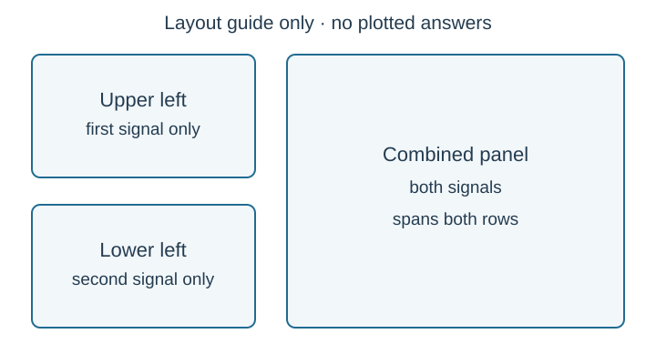

Course practice / Batch 18 / 2026-10-12 PDT
ENGR 103
CSV、拟合与科学绘图
CSV data, fitting & scientific plots · ICA 3：CSV 列提取、线性/指数拟合、向量化衰减曲线与三角函数子图
需要读取文件：Q01–03、Q07–08。公式生成数组：Q04–06、Q09–10；Q09附可选角度文件。无需自行编造或手抄数据。
下载全部输入文件 ZIP（6份CSV＋说明） · 逐个下载／查看格式说明
原题号、页面地址和本机草稿保留；如已有草稿，请对照此次修订后的数据范围与三面板要求。
Read a two-column experiment and fit a line
Supplied input file: Download q01_sensor.csv. Save it beside your Python program and read this file; do not invent, manually type, or paste the observations. UTF-8 text, comma delimiter, one header row, 41 numeric data rows. Column order: time_s,voltage_V. Time is in seconds and voltage is in volts. These are original synthetic practice data, not the instructor’s private file.
- Read the first numeric column into x and the second into y, both one-dimensional arrays. Print the number of samples and the first and last data pairs. Any correct CSV-loading library is allowed.
- Find the unweighted least-squares line V=mt+c. Print m and c to four decimals with units, and predict the fitted voltage at t=2.5 s. Plot the fitted line over 0≤t≤10 using at least 101 evenly spaced points.
- Plot observations as circles of size 8, blue faces, red edges of width 2, and no joining line. Use a teal dashed fit of width 2, a legend and blue grid. Give the plot a bold blue title of size 20 with pad 10. Label Time (s) and Voltage (V) in blue, size 15, semibold, pad 4, centered. Keep data and fit on the same axes.
中文提示（不含解答）
先检查列的含义与数组长度；拟合线使用自己的密集横坐标，不要把拟合系数当成绘图数据。
Keep the physical slope when current units change
Supplied input file: Download q02_device.csv. Save it beside your Python program and read this file; do not invent, manually type, or paste the observations. UTF-8 text, comma delimiter, one header row, 21 numeric data rows. Column order: current_mA,voltage_V. Current is in mA and voltage is in V; retain the zero-current observation and allow an intercept. These are original synthetic practice data, not the instructor’s private file.
- Read the two columns and fit V=a I_mA+b by ordinary unweighted linear least squares. Report a in V/mA, b in V, and the fitted voltage at 12.5 mA.
- Convert the entire current array to amperes and refit. Report the slope in V/A (ohms). Verify that the intercept and every fitted voltage are unchanged, and state the slope conversion factor.
- Graph current in mA horizontally using black-edged gold observation circles and a solid navy fit. Include a legend, light grid, units and descriptive title. Annotate the fitted equation and state explicitly which current unit it uses.
中文提示（不含解答）
只改变横轴单位会改变斜率数值，截距及各点的拟合电压不应改变。
Repair a CSV fit that mismatches columns and plotted points
Supplied input file: Download q03_spring.csv. Save it beside your Python program and read this file; do not invent, manually type, or paste the observations. UTF-8 text, comma delimiter, one header row, 13 numeric data rows. Column order: x_cm,F_N. Displacement x is in cm and force F in N. These are original synthetic practice data, not the instructor’s private file.
The proposed program below contains loading, fit-direction, array-shape and labeling mistakes.
import numpy as np
import matplotlib.pyplot as plt
x, F = np.loadtxt('q03_spring.csv', delimiter=',')
a, b = np.polyfit(F, x, 1)
xfit = np.linspace(0, 6, 101)
Ffit = a*xfit + b
plt.plot(x, F, 'o', label='observations')
plt.plot(x, Ffit, '--', label='fit')
plt.xlabel('Force (N)')
plt.ylabel('Displacement (cm)')
plt.legend()
plt.show()- Explain and repair the CSV read, fit direction and mismatched x/y plot lengths. You may use skiprows=1 and unpack=True, or another correct way to extract the supplied columns.
- Fit F=ax+b and print a, b and the predicted force at x=1.5 cm, to four decimals with units. State the lengths of the experimental arrays and of the smooth-fit arrays.
- Correct the axis labels, add a descriptive title and grid, and use red circular observations plus a blue dashed fit. Show the complete repaired program, which reads the downloaded file and runs without conversion or shape errors.
中文提示（不含解答）
表头不是数字；拟合的是纵轴量关于横轴量的关系，两条曲线可以有不同采样数，但每条曲线自己的 x 与 y 长度必须相同。
Plot three prescribed decaying cosine curves
Use the prescribed signals \(x_b(t)=A_0e^{-\alpha_b t}\cos(\omega_0t)\), with A0=1.5 m, m=8 kg, k=32 N/m, \(\omega_0=\sqrt{k/m}\), and \(\alpha_b=b/(2m)\). Use b=4,8,16 kg/s. These are supplied plotting formulas; do not identify them as the exact general critically/overdamped spring solution. Use 0≤t≤4 s with step 0.01 s, including both endpoints.
- Construct one shared one-dimensional time array and three signal arrays using elementwise NumPy calculations. Print their lengths, omega0, and the three alpha values with units.
- Print every signal at t=0 and t=1 s to six decimals. Explain why all start at the same displacement despite different decay factors.
- Plot all three on one axes with distinct colors and solid/dashed/dotted styles, a legend naming b and its units, time/displacement labels, green grid, and an annotation of the general supplied equation. Use a clear title.
中文提示（不含解答）
三个 b 对应三个指数衰减系数；公共时间数组可以直接参与逐元素乘法与三角运算。
Separate phase changes from the shared decay envelope
Use \(u(t)=2e^{-0.3t}\cos(3t)\) V and \(w(t)=2e^{-0.3t}\cos(3t+\pi/3)\) V, for 0≤t≤6 s at step 0.02 s including both endpoints. The displayed expressions are the complete models.
- Build the time array and both signal arrays without a Python loop over samples. Print the sample count and both values at t=0 and t=π/6 s, evaluating that latter time directly rather than using the nearest grid point.
- On one axes plot u as solid blue and w as dashed orange. Add the two shared envelope curves ±2exp(−0.3t) as thin dotted gray lines, with only one envelope legend entry.
- Use voltage/time units, a title, grid and legend. Annotate both signal equations. Explain which shared factor controls the envelope and which difference shifts the oscillation; do not describe the two decaying signals as exactly periodic.
中文提示（不含解答）
指定时刻不一定落在均匀数组里，数值检查可直接代入公式；振荡因子有周期，不代表乘上衰减后的完整信号仍有同一周期。
Choose array endpoints before drawing a short transient
Plot the supplied curve \(z(t)=0.6e^{-0.4t}\cos(2\pi t)\) cm from t=0 through t=2 s, with step 0.025 s and both endpoints included. Compare the two candidate time arrays below.
a = np.arange(0, 2, 0.025)
b = np.linspace(0, 2, 81)- Determine the number of entries and final entry in each candidate. Select the one that meets the stated endpoints and step, and explain the excluded upper endpoint of arange here.
- Generate z on the selected array and print z(0),z(1),z(2) to six decimals. Confirm which array indices correspond to those three times.
- Plot one purple line, mark these three checkpoint values with black circles, and annotate the supplied equation. Set x limits0 to 2 and ticks every0.25 s; include a title, legend, grid and units. Use unrounded data for plotting.
中文提示（不含解答）
先检查采样点数与末端值，再生成同长度的纵坐标；显示小数位数不应改变绘图使用的原始数据。
Load count-first, year-second data before an exponential fit
Supplied input file: Download q07_chip_counts.csv. Save it beside your Python program and read this file; do not invent, manually type, or paste the observations. UTF-8 text, comma delimiter, one header row, 13 numeric data rows. Column order: count,year. All counts are positive. The observations are fictional examples, not historical transistor-count claims. These are original synthetic practice data, not the instructor’s private file.
- Extract year as x and count as y, despite their reversed order in the file. Set \(t=\mathrm{year}-1990\), measured in years. Fit \(\ln y=a+bt\) with equal weights in log space and recover \(y=Ae^{bt}\). Print A, b and the fitted count for calendar year 2005.
- Plot the original counts against calendar year as light-blue circles of size 8 with black edges. Add a smooth exponential trendline using at least 161 points across the supplied year range. Set the y-axis to a logarithmic scale, but pass original counts rather than ln(count) into the plotting function.
- Use a descriptive title, year/count axis labels, legend and black grid. From the fitted b calculate the predicted count ratio over two years and the doubling time in years. Explain why a trend inferred from these synthetic inputs is not evidence of an actual historical law.
中文提示（不含解答）
先按列说明提取数据，再把年份移到横轴。拟合可用相对年份，图上的横轴仍标真实年份；这些数值为虚构练习数据。
Fit noisy positive observations in explicitly chosen log space
Supplied input file: Download q08_growth.csv. Save it beside your Python program and read this file; do not invent, manually type, or paste the observations. UTF-8 text, comma delimiter, one header row, 17 numeric data rows. Column order: time_min,count. Time is in minutes and count is dimensionless. Minimize squared errors in ln(count), not squared errors in count. These are original synthetic practice data, not the instructor’s private file.
- Read every supplied observation, verify that all counts are positive, and fit \(\ln y=a+bt\). Recover A=exp(a), and print A, b and the fitted count at t=2.5 min. Retain full precision until formatting.
- Create two side-by-side subplots of the same original count data and the same smooth exponential fit over 0≤t≤8. Use a linear y-axis on the left and logarithmic y-axis on the right, with consistent colors and legend labels, time/count units, titles and grids.
- Print one observed-to-fitted ratio for every input row, in file order, to four decimals. Explain why changing only the axis scale leaves A and b unchanged, and why a nonpositive count would be invalid for this fitting method.
中文提示（不含解答）
本题已经指定拟合误差所在的空间；不要把换成对数坐标轴误认为重新做了一次拟合。
Build the instructor-style three-panel signal layout
Create an angle array α from 0 through 2π radians, including both endpoints, with step π/16. Define \(f(\alpha)=1.5\sin\alpha\) V and \(g(\alpha)=0.75\cos(\alpha+\pi/6)\) V. As in the formula-generated subplot assignment, generating the array in Python is the primary workflow. An optional supplied angle CSV is also available for checking or convenient loading: UTF-8, comma-separated, one header alpha_rad, 33 numeric rows. It is a practice convenience, not a claim that the instructor’s subplot problem requires CSV input.
- Generate the angle array, or load the optional grid and verify its endpoints and spacing numerically. Compute both signal arrays. Print the sample count and both values at α=0,π/2,π,3π/2,2π, evaluating these checkpoints at the exact mathematical angles.
- Make the three-panel layout shown in the original layout guide: f alone in the upper-left panel, g alone in the lower-left panel, and both curves together in one large right panel spanning the full height. Use red solid f and navy dashed g consistently. The two left panels are the same size; the right panel spans their two rows. GridSpec, subplot2grid or equivalent layout tools are allowed.
- Give each panel an appropriate function title, legend, blue grid, Angle (rad) horizontal label and Voltage (V) vertical label. Use ticks 0,π/2,π,3π/2,2π with fractional-π labels on all three panels. Verify that the panels contain one, one and two signal lines respectively. Explain why equal signal values at the two ends do not make the angle samples identical.

中文提示（不含解答）
弧度用于三角函数运算；刻度标签只是展示文字，不应把数组中的数值替换成字符串。
Repair data routing in a three-panel trigonometric figure
The intended figure follows the same three-panel arrangement: sin(α) alone at upper left, cos(α) alone at lower left, and both together in the full-height right panel. Generate α from 0 through 2π radians with step π/16 including both endpoints; this is a formula-generated task and requires no CSV file. The following code is wrong.
import numpy as np
import matplotlib.pyplot as plt
alpha = np.arange(0, 360, np.pi/16)
fig = plt.figure()
grid = fig.add_gridspec(2, 2)
upper = fig.add_subplot(grid[0, 0])
lower = fig.add_subplot(grid[1, 0])
combined = fig.add_subplot(grid[0, 1])
upper.plot(alpha, np.sin(alpha), label='sine')
upper.plot(alpha, np.cos(alpha), label='cosine')
combined.plot(alpha, np.sin(alpha), label='sine')
lower.set_xlabel('Time (s)')
plt.legend()
plt.show()- Correct the angle array’s units, sample count, step and endpoints. Explain the radians/degrees mistake and print the corrected count and final angle.
- Fix the right panel so it spans both rows, route the sine and cosine to the proper separate left panels, and draw both in the right panel. Use blue solid sine and red dashed cosine consistently. Add all three titles and legends, blue grids, Voltage (V) and Angle (rad) labels.
- Use fractional-π tick labels at 0,π/2,π,3π/2,2π on all three axes. Verify the panel line counts are one, one and two, and report the first and last values of both generated signals. Show the complete repaired program.
中文提示（不含解答）
先修正角度数组，再分别检查三个 axes 对象。右侧应使用两行切片；图例和曲线要加到它们所属的 axes。